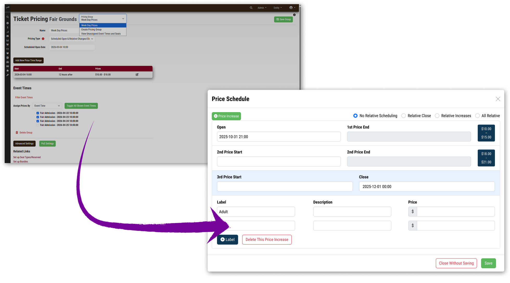
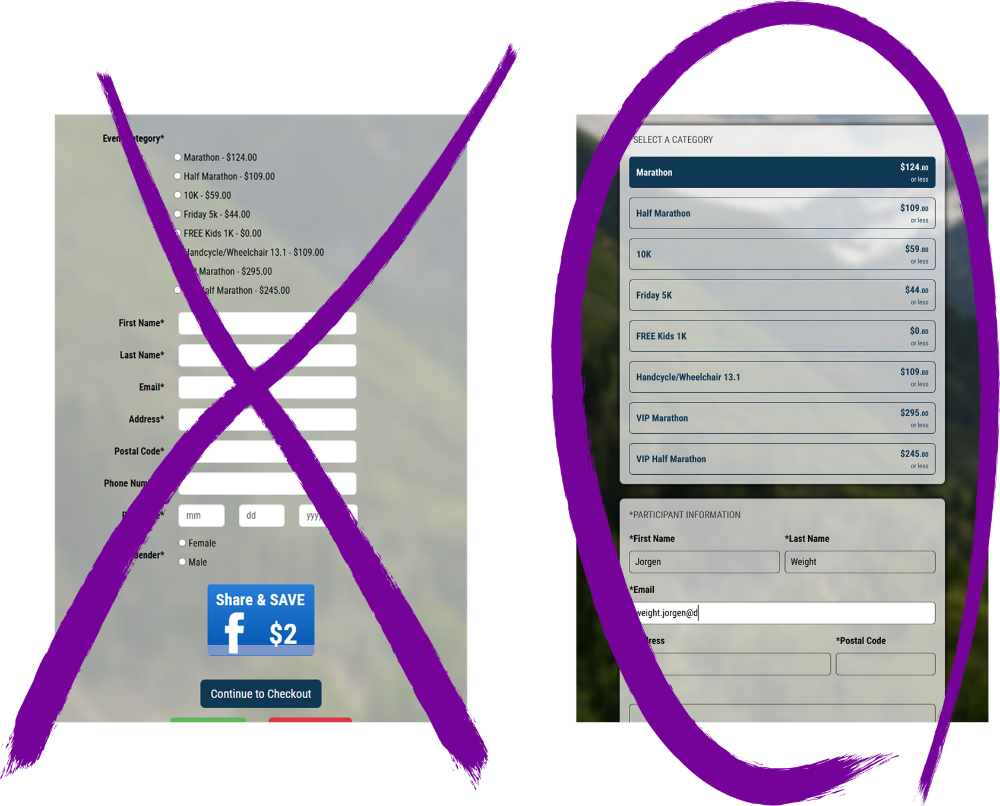

Creating seamless SaaS experiences that scale
Solving the "Am I done now?" Problem
After each step, users kept asking, "Am I done now?" We found a much more understandable interface and flow with prototyping and usability testing, resulting in a reduction of customer service calls.
View Case Study →

Losing Prospective Clients Over the Look
The sales team reported that prospective clients left the demo once they saw the registration form. Working with our graphic designer, we updated a decade-old form with current UX principles. (number about dropped demos)
View Case Study →

Reducing Dev Time and Refactoring
The company refactored major features regularly due to miscommunication between stakeholders and the dev team. My designs turned this code-debt nightmare into Agile-appropriate iterations.
View Case Study →
The Importance of Informing the User
These are all small TLCs that provided purpose, increased adoption, and/or added functionality to smaller features.
View Case Study →